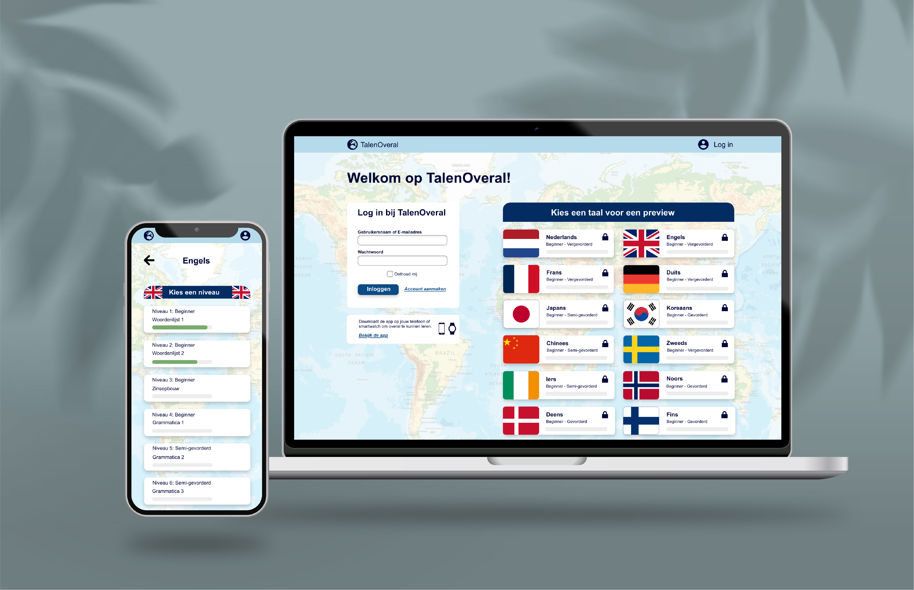
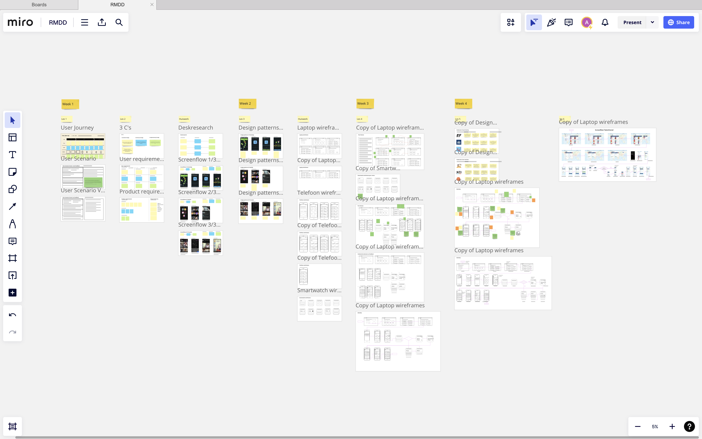
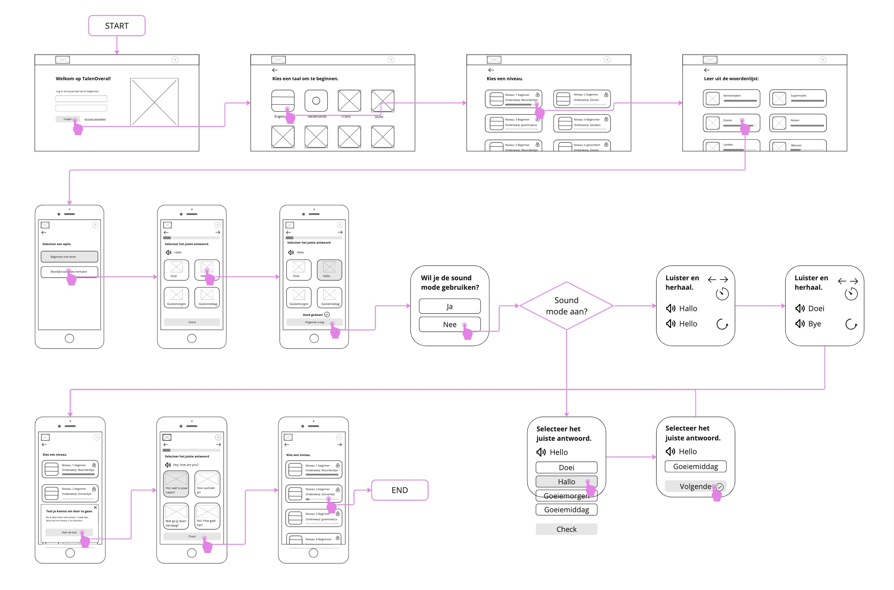
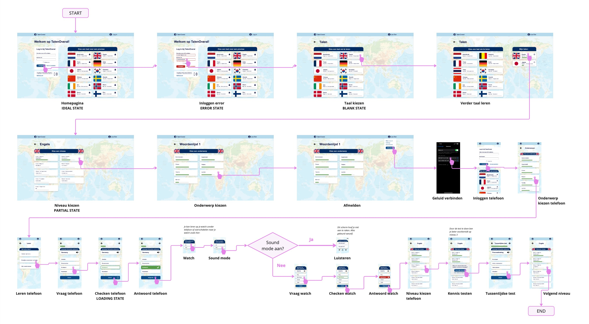

TalenOveral Ontwerp
De opdracht
Voor het vak Responsive Multi Device Design gingen we een interactieve design ontwerpen die via meerdere apparaten beleefd kan worden. Ik heb een taal-app ontworpen die zowel op mobiele telefoons als smartwatches kan worden gebruikt. Dit zorgt ervoor dat je overal talen kan leren zoals tijdens het reizen, tijdens je pauzes of thuis.
Het proces
Elke week hield ik de opdrachten van de les bij op een Miro-bord, waardoor ik overzicht kon houden, zowel voor de docent als voor mezelf Ik heb deskresearch gedaan naar de gebruikersscenario's, gebruikersbehoeften, designpatronen en meer. Toen ik precies wist wat ik moest maken om mijn doel te bereiken, ben ik begonnen met de wireframes.
Wireflow
Voor de wireframes heb ik de miro tools gebruikt om een lo-fi ontwerp te maken. Aan de hand van het handpictogram zie je waar de gebruiker op klikt en welke functie die knop heeft. Hierdoor wordt het duidelijk voor anderen hoe de app in elkaar zit. Je ziet ook wanneer je zou kunnen overschakelen naar een ander apparaat, in dit geval de smartwatch.
Screenflow
Nadat alles zijn eigen plek had gekregen, ben ik begonnen aan het hi-fi ontwerp in Adobe XD. Ik heb verschillende staten toegevoegd om te laten zien hoe dat er in de app uit zou zien. Ik heb veel plezier gehad in het maken van alle schermen en me ingeleefd in de gebruiker, omdat ik zelf ook van talen leren houd!
